도깨비의세계 도술 조합 추천 유저 추천 빌드 7개, 암습 빌드 시전 순서와 도술 슬롯 해금 조건
도술이 스타일 12개에 걸쳐 줄줄이 나오다 보니 어떤 걸 어느 칸에 넣을지 막막하시죠~ 저도 그래서 깨비지지 도술 빌더의 '유저 추천' 탭을 열어 보니, 많이 눌러 둔 조합이 한쪽으로 확 쏠려 있더라고요.
결론부터 말씀드리면 세 가지입니다.
- 유저 추천 1위는 «10초암습 궁빌드_절명,저격»으로, 절명 도술 3개와 저격 도술 4개를 넣고 궁극기 암습을 쓰는 구성이에요.
- 상위 7개 안에서는 1~5위가 전부 절명 3개에 저격 2~4개를 섞은 암습 구성이고, 암습이 아닌 건 6위와 7위 둘뿐이에요.
- 1위 빌드도 도술 7칸이 필요해서, 기본 5칸만으로는 그대로 따라 할 수 없어요.
기준은 10월 10일 낮 12시 무렵 깨비지지 도술 빌더의 유저 추천 탭(총 23건)이고, 추천 수는 계속 바뀌는데요, 출시 이틀 안팎이라 메타가 굳기 전이고 표본도 짧아요. 깨비지지는 10월 5일에 열린 카카오게임즈·슈퍼캣과 무관한 비공식 팬 사이트라 이용자가 직접 등록한 빌드가 올라오는 곳이고, 추천 수도 '많이들 눌렀다'는 인기 지표일 뿐 성능을 확인한 값은 아니랍니다.
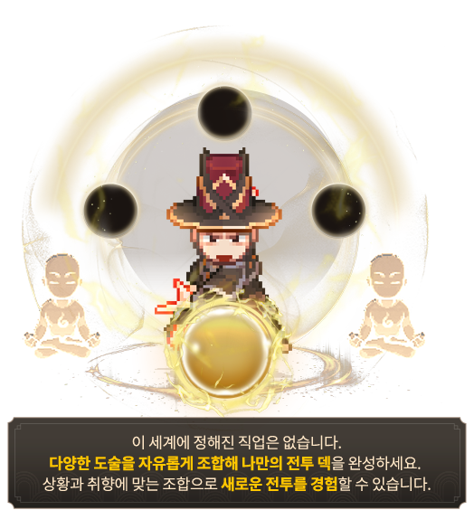
사전예약 때 공개된 공식 도술 소개 삽화예요. 정해진 직업 없이 도술을 골라 담는 게임이라 스타일 조합이 곧 빌드가 돼요.
이미지: 도깨비의세계 공식 홈페이지(사전예약 페이지) · 네이버 본문엔 받아서 재업로드 권장
유저 추천 상위 7개 빌드는 한눈에 어떻게 생겼나요?
10월 10일 낮 12시 무렵 유저 추천 인기순 1~5위는 전부 궁극기 암습 빌드이고, 6위는 파멸 도술 중심, 7위는 궁극기가 비어 있는 것으로 올라온 저격 은신 구성이에요.
| 순위 | 빌드 이름(등록자 표기) | 추천 수 | 스타일 구성 | 궁극기 | 도술 칸 |
|---|---|---|---|---|---|
| 1 | 10초암습 궁빌드_절명,저격 | 280 | 절명 3 · 저격 4 | 암습 | 7 |
| 2 | 10.68k 저격17 절명7 허수아비 1:26초 44만 | 54 | 절명 3 · 저격 4 | 암습 | 7 |
| 3 | 암습10초사냥용 | 31 | 절명 3 · 저격 3 · 헌신 1 | 암습 | 7 |
| 4 | 7초암습 최종빌드(보스,PVP용) | 17 | 절명 3 · 저격 4 · 연타 1 | 암습 | 8 |
| 5 | 고급 스킬 뺀 절명 궁트리 | 10 | 절명 3 · 연타 2 · 저격 2 | 암습 | 7 |
| 6 | 불굴 분출 사냥 | 7 | 파멸 5 · 헌신 1 | 대폭발 | 6 |
| 7 | 은신 저격궁 | 5 | 저격 3 · 절명·제압·파멸·강인·기동 각 1 | 없음 | 8 |
깨비지지 유저 추천 탭 인기순 · 2026년 10월 10일 낮 12시 무렵 조회 · 이름은 등록자가 붙인 그대로예요
도술 칸은 궁극기를 뺀 개수예요. 8위부터는 추천 수가 2 이하로 너무 적어서 뺐어요.
1위 빌드는 도술을 어떻게 채우고 어떤 순서로 쓰는지 볼까요?
유저 추천 1위 «10초암습 궁빌드_절명,저격»은 저격 도술 4개와 절명 도술 3개를 도술 7칸에 채우고, 궁극기 칸에는 암습을 놓은 구성인데요, 등록자가 적은 시전 순서는 아래 그림 그대로예요. 암습이 여섯 번째로 들어가는 점이 눈에 띄네요.
1사격(저격)→ 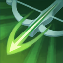 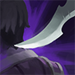 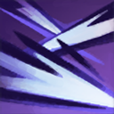 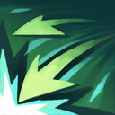 6암습(절명)→
6암습(절명)→
1위 빌드 시전 순서(등록자 표기) · 6번 암습이 궁극기이고 나머지 7개가 도술 칸이에요
이미지: 도술 아이콘 서고 3415·3431·3433 (출시 전 서고 캡처) · 네이버 본문엔 받아서 재업로드 권장
등록자 설명을 풀어 쓰면 핵심은 쿨타임이 짧은 저격 도술을 자주 써서 암습 쿨타임을 빨리 돌리는 거예요. 순서대로 쓰면 5스택을 채운 암습에 마무리 딜까지 이어진다고 적었어요.
공식 문구와 맞닿는 곳은 절명의 신식 개방이에요. 출시판 공식 도술 가이드는 이렇게 적어 뒀어요.
- 1단계는 도술이 적중하면 [검의 형상]을 얻어요.
- 2단계는 [검의 형상]이 3개 이상일 때 궁극기를 쓰면 전부 소모되며 궁극기 피해량이 늘어요.
- 3단계는 [검의 형상]이 최대치일 때 더 얻으면 궁극기 재사용 대기 시간이 줄어요.
1단계가 '도술 적중 시'라서 많이 맞힐수록 형상이 쌓이는 구조로 읽혀요. 다만 등록자가 말한 '암습 쿨을 빨리 돌린다'가 3단계(재사용 대기 시간 감소)를 뜻하는지는 공식 글로 확인되지 않았어요. 피해량·감소 수치는 가이드엔 없고 출시 전 서고도 X%로 가려 뒀어요.
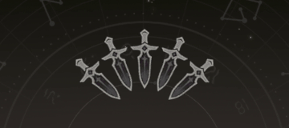
출시 전 공식 도깨비 서고 캡처예요. 서고에는 [단검]으로 적혀 있고 출시판 도술 가이드는 같은 구조를 [검의 형상]으로 안내해요.
이미지: 도깨비의세계 공식 서고 3415 (출시 전 서고 캡처) · 네이버 본문엔 받아서 재업로드 권장
사냥용·보스용이라 이름 붙은 빌드는 1위 빌드와 뭐가 다른가요?
3위(등록자 표기 사냥용)는 1위에서 기습·꿰뚫는 저격을 빼고 내려찍기·생명의 흐름을 넣었고, 4위(등록자 표기 보스·PvP용)는 1위에 묵직한 주먹을 더해 도술 8칸을 써요. 표의 ●는 그 빌드에 들어간 도술이고, 도술 칸은 궁극기를 뺀 개수예요.
| 도술명 | 스타일 | 1위 | 2위 | 3위 | 4위 | 5위 |
|---|---|---|---|---|---|---|
| 절명(궁극기) | ● | ● | ● | ● | ● | |
| 기습 | 절명 | ● | ● | |||
| 연속 찌르기 | 절명 | ● | ● | ● | ● | ● |
| 삼단 찌르기 | 절명 | ● | ● | ● | ● | ● |
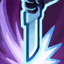 내려찍기 | 절명 | ● | ● | ● | ||
| 사격 | 저격 | ● | ● | ● | ● | ● |
| 쇠뇌 사격 | 저격 | ● | ● | ● | ● | |
| 이중 사격 | 저격 | ● | ● | ● | ● | ● |
| 꿰뚫는 저격 | 저격 | ● | ● | ● | ||
| 생명의 흐름 | 헌신 | ● | ||||
| 묵직한 주먹 | 연타 | ● | ||||
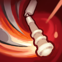 휘둘러 내려치기 | 연타 | ● | ||||
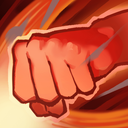 주먹 지르기 | 연타 | ● | ||||
| 도술 칸 | 7 | 7 | 7 | 8 | 7 |
유저 추천 1~5위 도술 구성 비교 · ●가 들어간 도술이에요 · 도술 칸은 궁극기를 뺀 개수예요
이미지: 도술 아이콘 서고 3415·3431·3433 (출시 전 서고 캡처) · 네이버 본문엔 받아서 재업로드 권장
빌드별 순서와 용도는 이래요.
- 2위 «10.68k 저격17 절명7 허수아비 1:26초 44만»(추천 54)는 기습 자리에 내려찍기가 들어간 1위 변형이에요. 순서는 암습 → 쇠뇌 사격 → 꿰뚫는 저격 → 삼단 찌르기 → 내려찍기 → 사격 → 이중 사격 → 연속 찌르기이고, 이름의 허수아비 기록은 등록자 표기예요.
- 3위 «암습10초사냥용»(추천 31)은 생명의 흐름으로 회복을 챙긴 구성이고, 등록자가 사냥용이라고 이름 붙였어요. 등록자는 연속 찌르기 다음 이중 사격 정도만 지키면 쿨마다 알아서 돌아간다고 적었어요.
- 4위 «7초암습 최종빌드(보스,PVP용)»(추천 17)은 등록자가 보스·PvP용 최종 빌드라고 밝힌 8칸 구성이에요. 순서는 사격 → 꿰뚫는 저격 → 기습 → 묵직한 주먹 → 암습 → 삼단 찌르기 → 연속 찌르기 → 이중 사격 → 쇠뇌 사격이고, 'DPS 6316 / 1분 총딜량 40만'과 '7초 암습'은 등록자 표기예요.
- 5위 «고급 스킬 뺀 절명 궁트리»(추천 10)은 절명 3·연타 2·저격 2로 채운 절명 위주 변형이에요. 순서는 휘둘러 내려치기 → 이중 사격 → 사격 → 암습 → 주먹 지르기 → 삼단 찌르기 → 내려찍기 → 연속 찌르기예요.
암습 말고 다른 길은 없을까요?
암습 말고는 파멸 도술 5개에 헌신 도술 불굴을 더한 6위 «불굴 분출 사냥»과, 궁극기가 비어 있는 것으로 올라온 7위 «은신 저격궁»이 유저 추천 상위에 올라 있어요.
| 빌드 | 도술 구성 | 궁극기 |
|---|---|---|
| 6위 불굴 분출 사냥 | 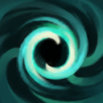 요혼격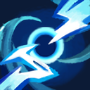 번개 폭풍낙뢰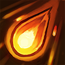 화염구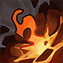 화염 분출불굴 | 대폭발 |
| 7위 은신 저격궁 | 은신 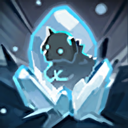 얼음 감옥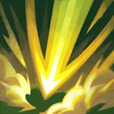 폭발하는 화살쇠뇌 사격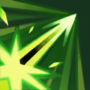 일점 저격서리의 잔향전투의 함성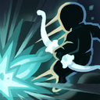 후퇴 사격 | 없음 |
6·7위 도술 구성 · 이름은 등록자가 붙인 그대로예요
이미지: 도술 아이콘 서고 3415·3431·3433 (출시 전 서고 캡처) · 네이버 본문엔 받아서 재업로드 권장
- 6위 «불굴 분출 사냥»(추천 7)은 이름 그대로 사냥용이고 도술 6칸에 궁극기는 대폭발이에요. 파멸 도술을 5개 몰아 담아 같은 스타일 3개 이상이라는 조건을 넉넉히 넘겨요.
- 7위 «은신 저격궁»(추천 5)는 도술 8칸에 스타일이 여섯 갈래로 퍼져 있고 궁극기 칸이 비어 있는 것으로 올라왔어요. 빌더 데이터에는 저격 도술 3개가 들어 있지만 이 3개가 8칸 중 어디에(하단 5칸 안인지) 놓였는지는 빌더 표기로 알 수 없어 비어 있는 이유는 확인하지 못했어요. 가이드는 '하단 슬롯 5칸에 같은 스타일 3개 이상'이라고 적어 두었어요.
따라 하기 전에 알아둘 점이 뭔가요?
상위 빌드는 도술 6~8칸을 쓰고 도술마다 조각 100개를 모아 배워야 해서, 따라 하기 전에 칸 수와 보유 도술부터 맞춰야 해요.
- 칸 수는 도술 슬롯이 총 8개로 기본 5개에 잠금 3개이고, 잠금은 영기 수련 5-1 완료·전투 멤버십 구매·협력 수련 '산군의 석등' 3-1 완료로 풀려요. 1·2·3·5위는 잠금 2개, 6위는 잠금 1개, 8칸인 4·7위는 3개를 모두 풀어야 해요.
- 보유 도술은 도술마다 조각 100개를 모아 '배우기'를 눌러야 하고, 조각은 금전 상점·상자·각종 콘텐츠에서 얻어요. 상인회 가이드(공식 상인회 가이드)에는 도경의 도술 상점이 파멸·강타·연타·저격 조각을 판다고 적혀 있고, 라심·미누 상점은 다른 도술 조각도 판다고 해요. 절명 조각은 공식 재화 안내(공식 TIP)에 문파 상점의 '용맹의 도술 조각 선택 상자'(절명 포함)로 나와요.
- 강화 단위는 강화가 같은 스타일 도술이 한꺼번에 올라서 절명 3개를 몰아 담는 빌드와 잘 맞아 보여요. 각성은 도술마다 따로 하고, 돌파가 어느 단위로 오르는지는 제가 본 공식 성장 가이드에 적혀 있지 않아요.
- 효과 차이는 10월 8일 오류 안내에 '일부 도술의 돌파·신식 개방 효과가 툴팁과 다르게 적용되는 현상'이 올라 있고 어느 도술인지는 없어요.
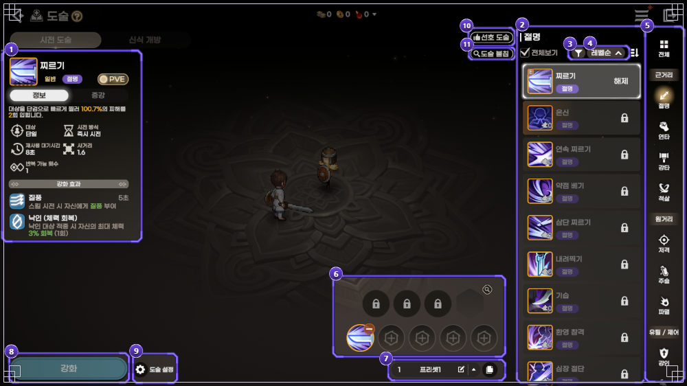
공식 가이드 화면이에요. 아래쪽 5칸이 기본 슬롯, 위쪽 자물쇠 3칸이 잠금 슬롯이고 오른쪽 육각 칸이 궁극기예요.
이미지: 도깨비의세계 공식 도술 가이드 · 네이버 본문엔 받아서 재업로드 권장
제가 본 출시판 도술 가이드에는 저격 신식 설명이 없고, 출시 전 서고에만 있어요. [화살촉]이 1개 이상이면 저격을 뺀 도술 피해량이 늘고, 소모하면 저격 도술 피해량이 늘면서 [조준]이 발동해요.
저격 신식 문구와 도술 이름은 출시 전 서고(9월 29일 게시) 기준이라 인게임과 다를 수 있어요. 도술 아이콘은 미리보기 화면에만 넣었고 네이버 본문엔 도술 이름만 적었어요.
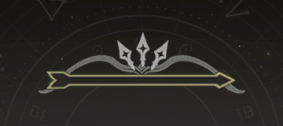
출시 전 서고 캡처예요.
이미지: 도깨비의세계 공식 서고 3431 (출시 전 서고 캡처) · 네이버 본문엔 받아서 재업로드 권장
제가 본 공식 글(도술 가이드·성장 가이드·서고)에서는 확인하지 못한 것도 있어요.
- 절명 3개와 저격 4개처럼 두 스타일이 모두 3개 이상일 때 어느 궁극기가 등록되는지는, 도술 가이드가 3개 이상이면 자동 등록된다는 데까지만 적었어요.
- 저격 도술의 적중도 [검의 형상]으로 세는지는 도술 가이드에 따로 적혀 있지 않았어요.
- 신식 개방이 다른 스타일을 섞어도 유지되는지는 사전예약 때 공식 라이브 시연회 QnA 종합 안내가 답했지만 출시 후 글에서는 다시 확인되지 않았어요.
자주 묻는 질문
Q. 도깨비의세계 도술 조합 추천, 도술 칸이 5개뿐이면 뭘 따라 해야 하나요?
상위 7개 중 5칸으로 그대로 따라 할 수 있는 빌드는 없어요. 가이드 문구대로면 하단 기본 5칸에 절명 3개만 채워도 암습이 켜지니 거기에 저격 2개를 얹은 5칸이 출발점이 될 수 있는데, 유저 추천에 오른 구성이 아니라 가이드 문구로 맞춘 거예요.
Q. 도깨비의세계 도술 추천, 어떤 도술이 제일 많이 겹쳤나요?
암습 5개 빌드 모두에 사격·이중 사격·연속 찌르기·삼단 찌르기가 들어갔고, 쇠뇌 사격은 4개, 꿰뚫는 저격과 내려찍기는 3개, 기습은 2개에 있었어요.
Q. 도깨비의세계 암습 빌드는 어떻게 켜나요?
암습은 절명 스타일의 궁극기라서, 가이드 기준으로 하단 기본 슬롯 5칸에 절명 도술을 3개 이상 넣어야 궁극기 칸에 자동으로 올라오거든요. 빌더 데이터상 7위는 절명이 1개뿐이고 궁극기 칸이 비어 있어요. 저격 도술 3개가 8칸 중 어디에(하단 5칸 안인지) 들어갔는지는 빌더 표기로 알 수 없어서, 비어 있는 이유는 확인하지 못했어요.
도깨비의세계 도술 조합 정리
순서만 잡으면 덜 헤매요. 칸 수를 먼저 맞추고 절명 3개를 채운 뒤 남는 칸을 저격으로 메우시되, 직접 DPS를 재 보며 내 장비에 맞는 쪽을 고르시면 좋겠습니다.
✔ 도깨비의세계 같이 보기 좋은 내용
· 도깨비의세계 필드보스 시간 요일별 일정표, 신기 쟁탈전 미혹의 정원 문파전 시간까지 한 장으로
· 도깨비의세계 보물상자 위치 정리, 지역 19곳 상자 91개 미니맵 번호 핀과 상자별 보상
· 도깨비의세계 쿠폰 4종 정리, 코드 입력하는 법과 마감일 한눈에
참고한 곳
· 공식 가이드 — 도술(7834)
· 공식 가이드 — 성장(7739)
· 공식 오류 안내(10859)
· 공식 가이드 — 상인회(7988 · 도술 상점 항목)
· 공식 TIP — 재화 획득처(8076)
· 공식 공지 — 라이브 시연회 QnA 종합 안내(1132 · 사전예약 기간)
· 공식 서고(출시 전 자료) 3415·3431·3433
조회한 곳(팬 사이트·비공식)
· 깨비지지 도술 빌더 유저 추천 탭 — 2026년 10월 10일 낮 12시 무렵 조회